Accountable Budgeting
february 2016 - current
- iOS app allowing multiple people to manage a budget
- originally developed a NodeJS server with MongoDB, hosted on Heroku
- rewrote server in Swift with Perfect (hosted on Heroku), and then later ported over to Vapor (hosted on DigitalOcean)
- uses Plaid for receiving transaction data
- added to the app store on 12/23/2022
- can be downloaded here and website is accountable.money
- 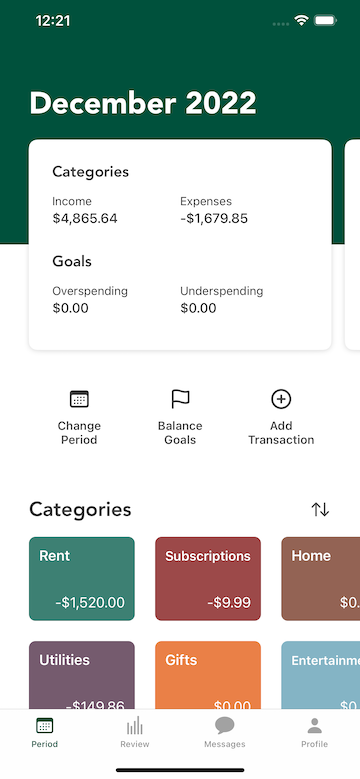 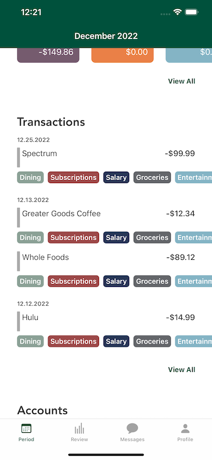 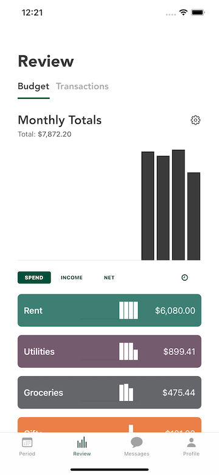 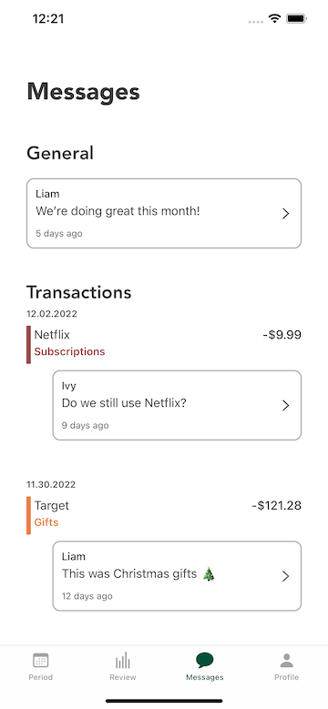 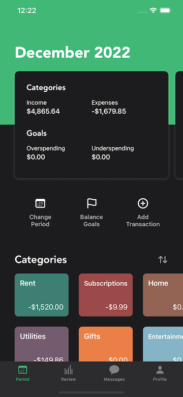
Snoo for Watch
february 2022 - may 2022
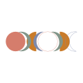
AstroFlow
july 2019 - april 2020
- subscription based iOS app for tracking astrological events and how they affect you, taking astrologically related yoga classes, and discovering your astrological chart
- uses a swift Vapor server hosted on DigitalOcean with a MongoDB database
- videos were hosted on Mux, content management handled using Prismic
- added to the app store on 9/11/2019
- can be downloaded here
-
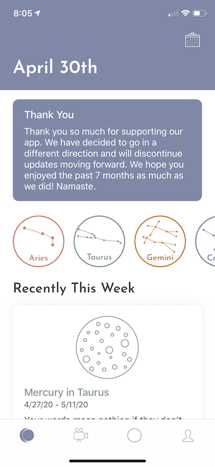 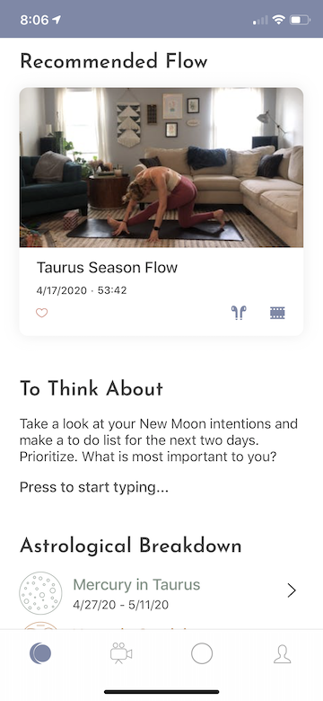

 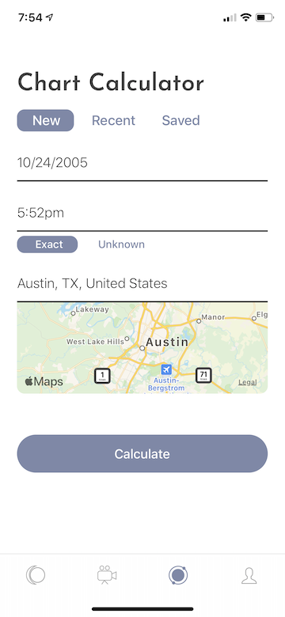
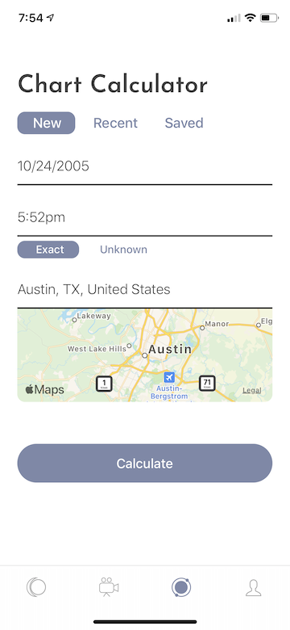

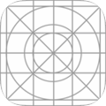
Anniversary Tour
january 2020 - hiatus

Splice Listener
august 2017 - hiatus
Hindsight Playlist
november 2016 - december 2016
- iOS app that displays your Last.fm data
- written in Swift and used Last.fm API
search - for Vine
may 2016 - october 2016
Music Degrees of Separation
december 2014 - april 2016
- iOS app that determines the smallest number of steps to get from one artist to another through Related Artists on Spotify using the Spotify API
- uses BFS and makes 10 queries/second to get to the target artist
-
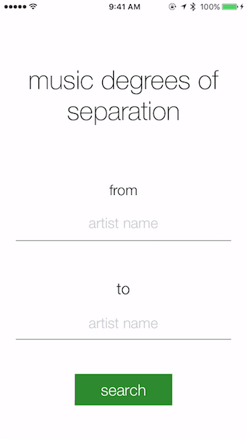
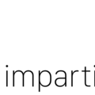
imparticular
june 2015 - september 2015
- a custom blog website with several ways of finding posts
- developed a RESTful api for accessing data
- created using MongoDB, Node.js, mustache (templating), and a hybrid of AngularJS/D3.js
- can be viewed here
 phraze
march 2015 - may 2015
phraze
march 2015 - may 2015
spotter
april 2014 - may 2015
 genre map
february 2014 - may 2014
genre map
february 2014 - may 2014
{kind=link}
{kind=link}
{kind=link}
{kind=link}
{kind=link}
{kind=link}
{kind=link}
{kind=link}
{kind=link}
{kind=link}
{kind=link}
{kind=link}
{kind=link}
{kind=link}
{kind=link}
{kind=link}
{kind=link}
{kind=link}
{kind=link}
{kind=link}
{kind=link}
{kind=link}
{kind=link}
{kind=link}
{kind=link}
{kind=link}
{kind=link}
{kind=link}
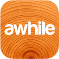
awhile
march 2014 - may 2014
{kind=link}
{kind=link}
{kind=link}
 SuperRdio
january 2014 - february 2014
SuperRdio
january 2014 - february 2014- alternative iOS interface for Rdio app with additional features added
- uses Rdio and Last.fm APIs to achieve a more user friendly interface
ContextLock
december 2013
- android app that determines where the user frequently spends time so it can lock the phone in foreign places
HourTracker
fall 2013
- iOS app to log work hours, designed for iOS7
- contextually learns where the user works so it can give reminders to record the time upon arriving/leaving work
LiveForum
summer 2013
- android app for creating and posting in location-based message boards
- used Parse as a backend